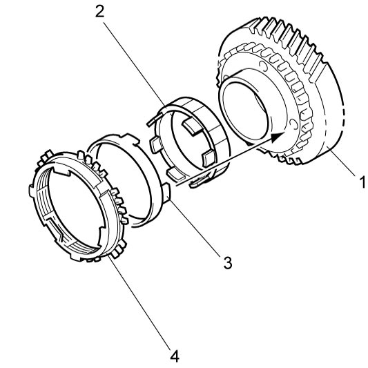

5B
| Countershaft Disassembly and Reassembly |
Disassembly
NOTICE:
Supporting the gear on the concave side of the puller can cause damage to the gear.
Support the gear on the flat side of the puller.
 "Expand image")
2)Remove left bearing (2) and 6th gear (3) using bearing puller (4) and hydraulic press, and then remove 5th gear spacer.
 CAUTION:
CAUTION:

Using an inappropriate hydraulic press or bearing puller could cause personal injury.
Check that both the hydraulic press and bearing puller are capable of safely bearing a load of at least 5 tons (11,000 lbs).
 "Expand image")
| 1. | Countershaft |
3)Apply bearing puller (3) to 4th gear (2) and remove 5th gear (1) with 4th gear using hydraulic press.
 "Expand image")
 "Expand image")
5)Apply bearing puller (3) to 2nd gear (2) and remove 3rd gear (1) with 2nd gear using hydraulic press.
 "Expand image")
6)Apply bearing puller (4) to reverse gear (3) and remove low speed synchronizer sleeve & hub assembly (1), 1st gear (2) with reverse gear using hydraulic press.
 "Expand image")
7)Grind portion “a” of right bearing (1) using grinder (2) as shown.

NOTICE:
The shaft (3) will be damaged if the bearing is ground too much.
Limit the amount of grinding to the minimum amount if necessary.
 "Expand image")
8)Break the thinnest portion of bearing inner race (2) with a chisel (1) and remove bearing.

 "Expand image")
Reassembly
1)Fit low speed synchronizer sleeve (1) to hub (2) and 3 keys (3) as shown in figure.
NOTE:
No specific direction is assigned to low speed synchronizer hub and each key but it is assigned as assembly.
Synchronizer key installation position
 "Expand image")
| [a]: | 2nd gear side | [b]: | Key way |
2)Install reverse gear (1) to countershaft (2) using bearing puller (3) and hydraulic press.

 "Expand image")

 "Expand image")
4)Install 1st gear needle bearing and apply transaxle oil to it, and then install 1st gear synchronizer inner ring (2), 1st gear synchronizer center cone (3), 1st gear synchronizer outer ring (4) and 1st gear (1) to countershaft.
NOTE:
Make sure claws on 1st gear synchronizer center cone fit into the holes on 1st gear.

 "Expand image")
5)Install low speed sleeve & hub assembly (1) using special tool and hydraulic press.
NOTE:
•Support low speed synchronizer hub using special tool as shown in figure.
•Check that synchronizer ring key protrusion (5) are aligned with keys while press-fitting sleeve & hub assembly.
•Check free rotation of 1st gear (3) after press-fitting sleeve & hub assembly.
•Check that synchronizer ring key protrusion (5) are aligned with keys while press-fitting sleeve & hub assembly.
•Check free rotation of 1st gear (3) after press-fitting sleeve & hub assembly.
 "Expand image")
| [a]: | 1st gear side | 2. | 1st gear synchronizer ring |
| [b]: | Key slots | 4. | 1st gear needle bearing |
 "Expand image")
7)Install 3rd gear (5), 2nd gear (1), 2nd gear synchronizer inner ring (2), 2nd gear synchronizer center cone (3) and 2nd gear synchronizer outer ring (4) to countershaft using special tool and hydraulic press.
NOTE:
Make sure claws on 2nd gear synchronizer center cone fit into the holes on 2nd gear.
 "Expand image")
8)Select new circlip (1) that makes thrust clearance “a” of bearing 0.15 mm (0.0059 in) or less and install it.
 "Expand image")
Available circlip thickness
| Clearance “b” | Circlip thickness |
|---|---|
| 2.000 – 2.100 mm (0.0788 – 0.0826 in.) |
2.00 mm (0.0788 in.) |
| 2.100 – 2.200 mm (0.0826 – 0.0866 in.) |
2.10 mm (0.0826 in.) |
| 2.200 – 2.300 mm (0.0866 – 0.0905 in.) |
2.20 mm (0.0866 in.) |
| 2.300 – 2.400 mm (0.0905 – 0.0944 in.) |
2.30 mm (0.0905 in.) |
| 2.400 – 2.500 mm (0.0944 – 0.0984 in.) |
2.40 mm (0.0944 in.) |
| 2.500 – 2.600 mm (0.0984 – 0.1023 in.) |
2.50 mm (0.0984 in.) |
9)Install 4th gear (1) using bearing puller and hydraulic press.

 "Expand image")
10)Install 5th gear by the same procedure as in Step 7).
11)Install 6th gear (1) and 5th gear spacer (2) using special tool and hydraulic press.
 "Expand image")
12)Install countershaft left bearing (1) and washer using special tool and hydraulic press.
 "Expand image")
13)Install countershaft right bearing (1) using special tool and hydraulic press.
 "Expand image")
14)Select new circlip (1) that makes thrust clearance “a” of bearing 0.1 mm (0.0039 in) or less and install it.
 "Expand image")
Available circlip thickness
| Clearance “b” | Circlip thickness |
|---|---|
| 1.810 – 1.860 mm (0.0713 – 0.0732 in.) |
1.81 mm (0.0713 in.) |
| 1.860 – 1.910 mm (0.0732 – 0.0751 in.) |
1.86 mm (0.0732 in.) |
| 1.910 – 1.960 mm (0.0751 – 0.0771 in.) |
1.91 mm (0.0751 in.) |
| 1.960 – 2.010 mm (0.0771 – 0.0791 in.) |
1.96 mm (0.0771 in.) |
| 2.010 – 2.060 mm (0.0791 – 0.0811 in.) |
2.01 mm (0.0791 in.) |
| 2.060 – 2.100 mm (0.0811 – 0.0826 in.) |
2.06 mm (0.0811 in.) |
| 2.100 – 2.130 mm (0.0826 – 0.0838 in.) |
2.10 mm (0.0826 in.) |
| 2.130 – 2.160 mm (0.0838 – 0.0850 in.) |
2.13 mm (0.0838 in.) |
| 2.160 – 2.190 mm (0.0850 – 0.0862 in.) |
2.16 mm (0.0850 in.) |
| 2.190 – 2.220 mm (0.0862 – 0.0874 in.) |
2.19 mm (0.0862 in.) |
| 2.220 – 2.250 mm (0.0874 – 0.0885 in.) |
2.22 mm (0.0874 in.) |
| 2.250 – 2.280 mm (0.0885 – 0.0897 in.) |
2.25 mm (0.0885 in.) |
| 2.280 – 2.310 mm (0.0897 – 0.0909 in.) |
2.28 mm (0.0897 in.) |